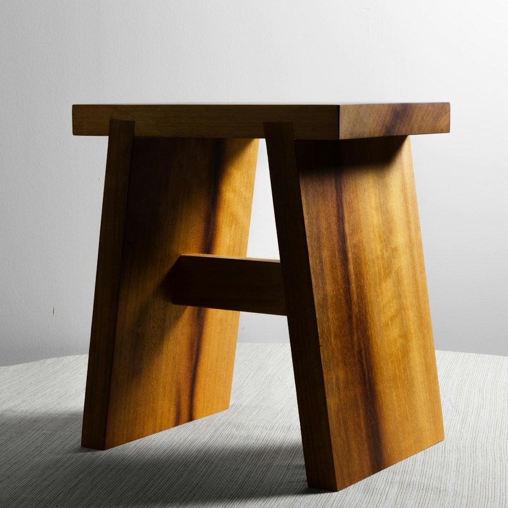
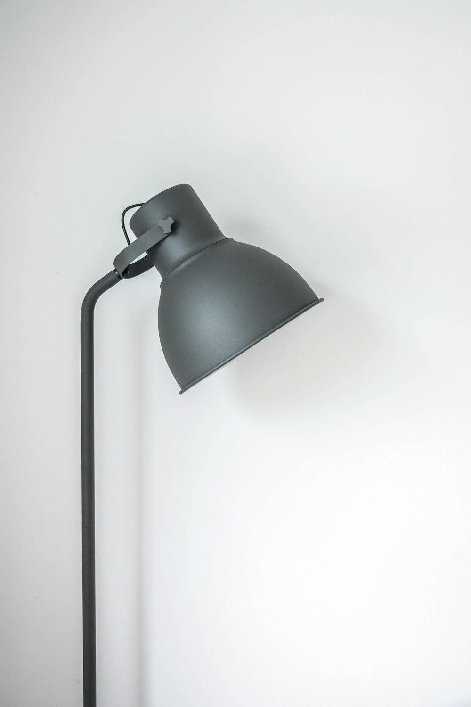
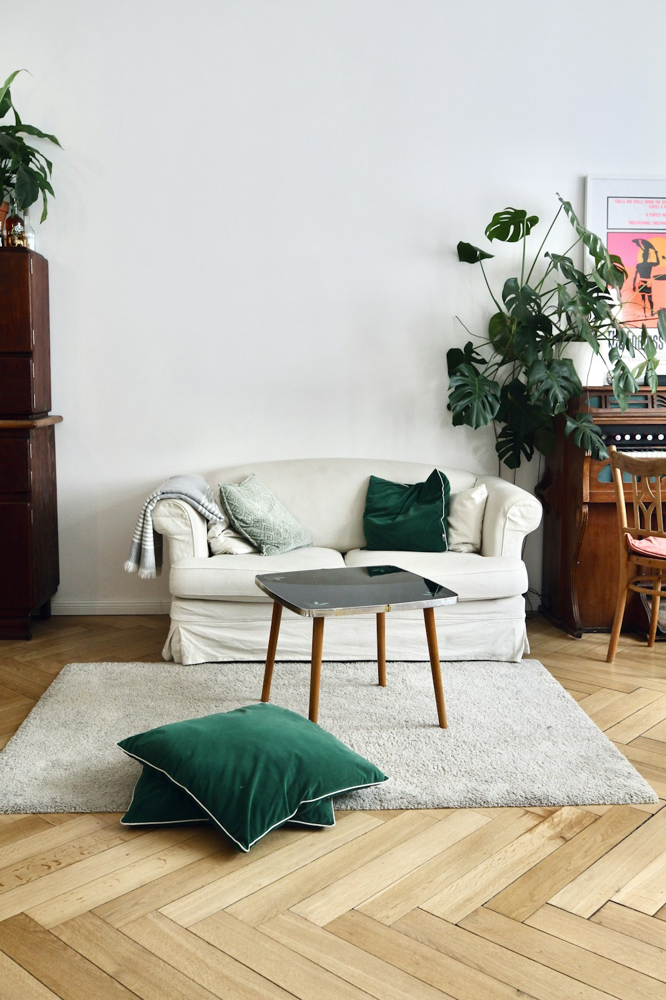
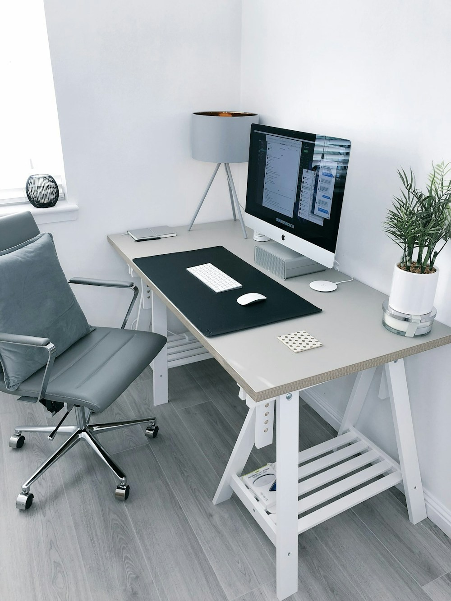
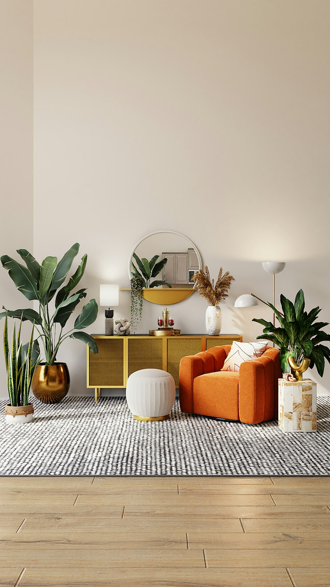
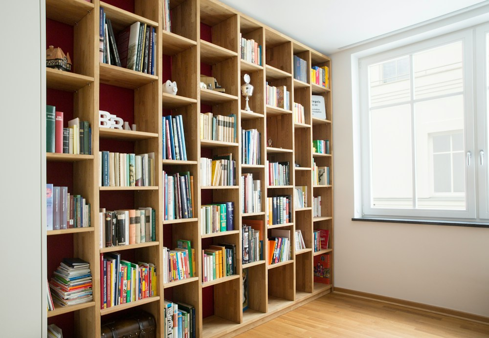

Materials · 5 min
Walnut, oil, and the value of a repairable surface
Why a finish designed to change can be more useful than one designed to remain untouched.
August 21, 2026Material journal
Field notes on makers, materials, maintenance, and the quiet decisions behind spaces that improve with age.

Spaces · 8 min read
Start with proportion and daily movement, then choose materials that can carry evidence of a life well lived.
Read the story →Latest stories

Materials · 5 min
Why a finish designed to change can be more useful than one designed to remain untouched.
August 21, 2026
Practice · 6 min
A practical balance of daylight, ambient light, and a precise source at the desk.
August 8, 2026
Spaces · 4 min
How circulation, negative space, and visual weight make a compact room feel settled.
July 24, 2026
Practice · 7 min
Map the tasks first. The right surface, storage, and lighting decisions follow naturally.
July 10, 2026
Materials · 5 min
From tension and framing to the simple maintenance that keeps woven panels working.
June 26, 2026
Spaces · 6 min
A modular system can organise a wall, define a room, and change as the household does.
June 12, 2026Selection principle
Good objects do not demand constant attention. They support the room, the routine, and the people using them.How we select